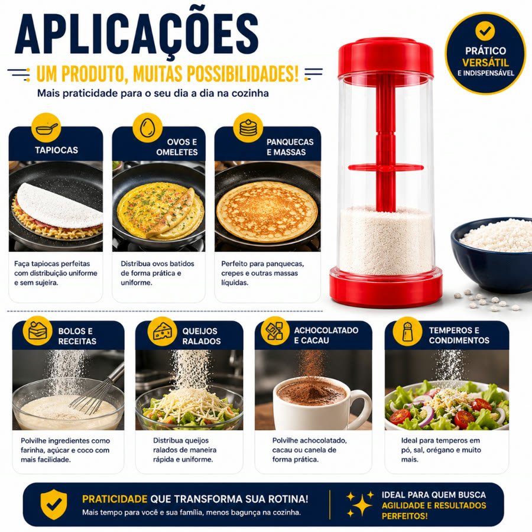
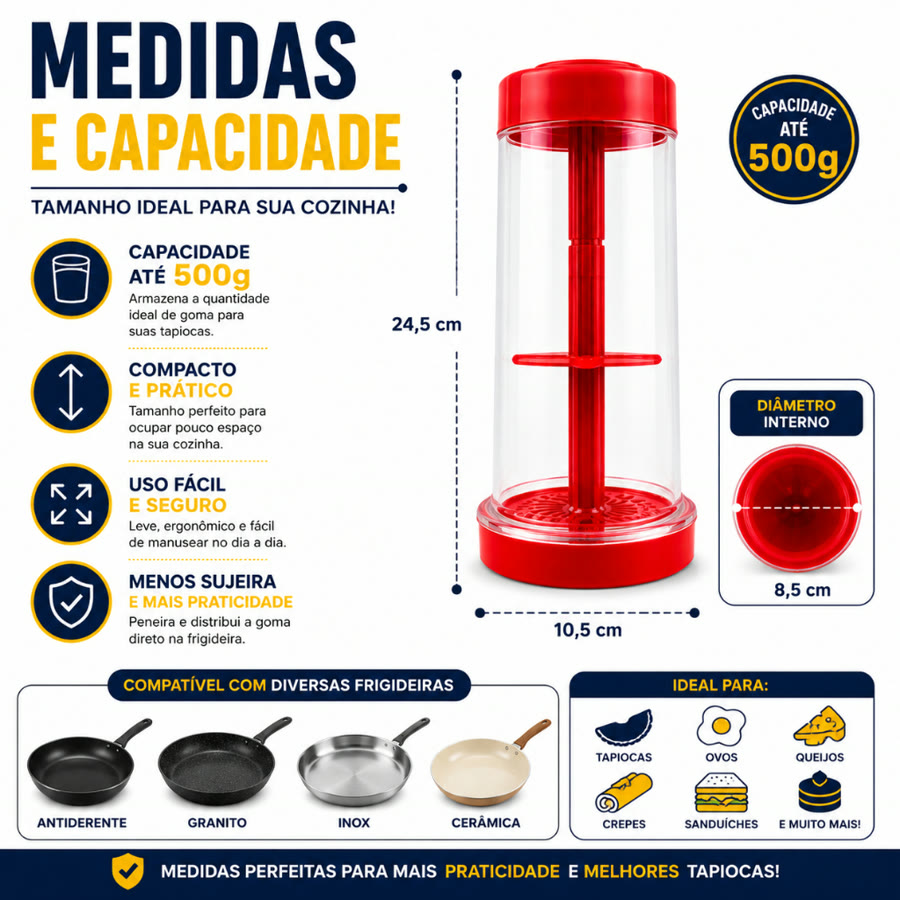
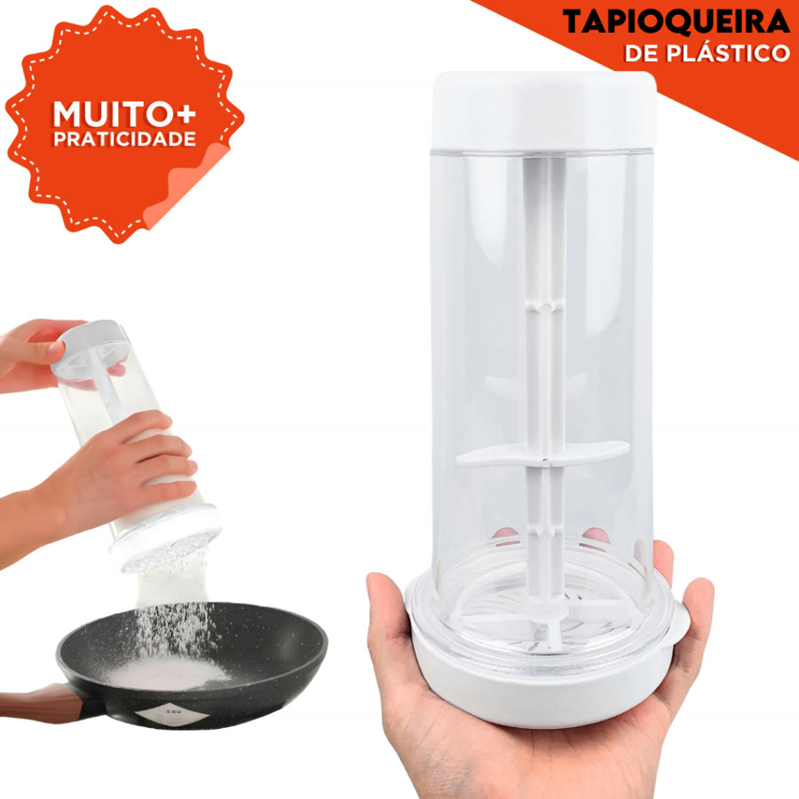
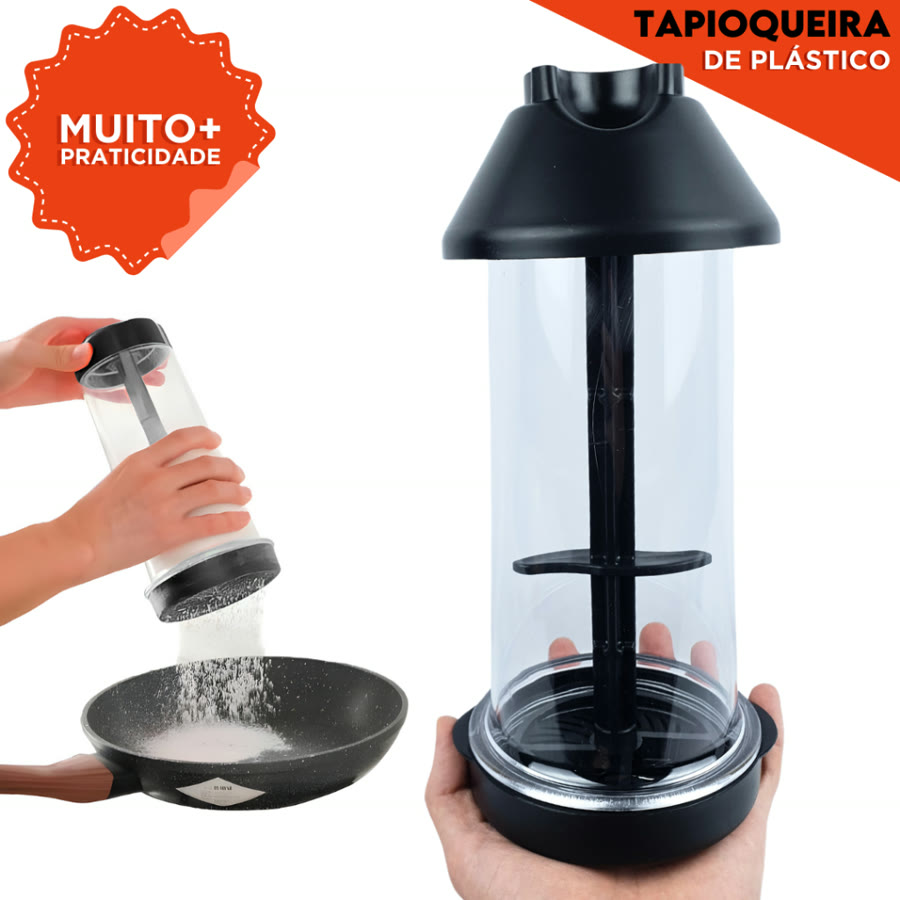
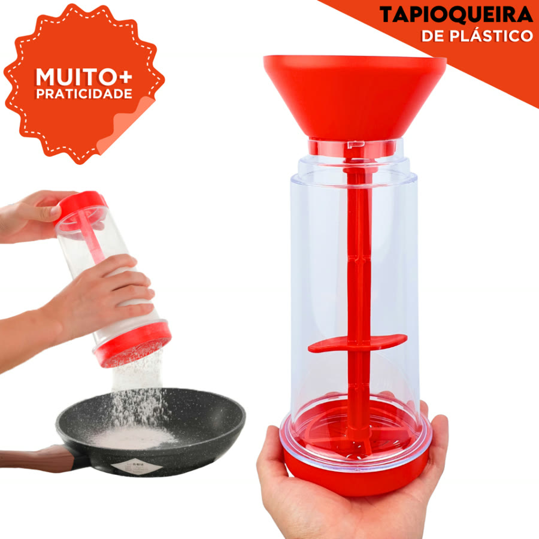
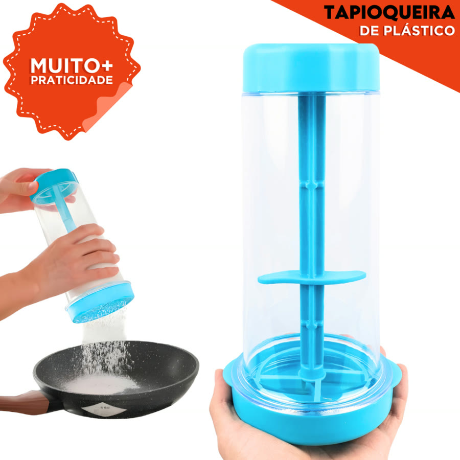
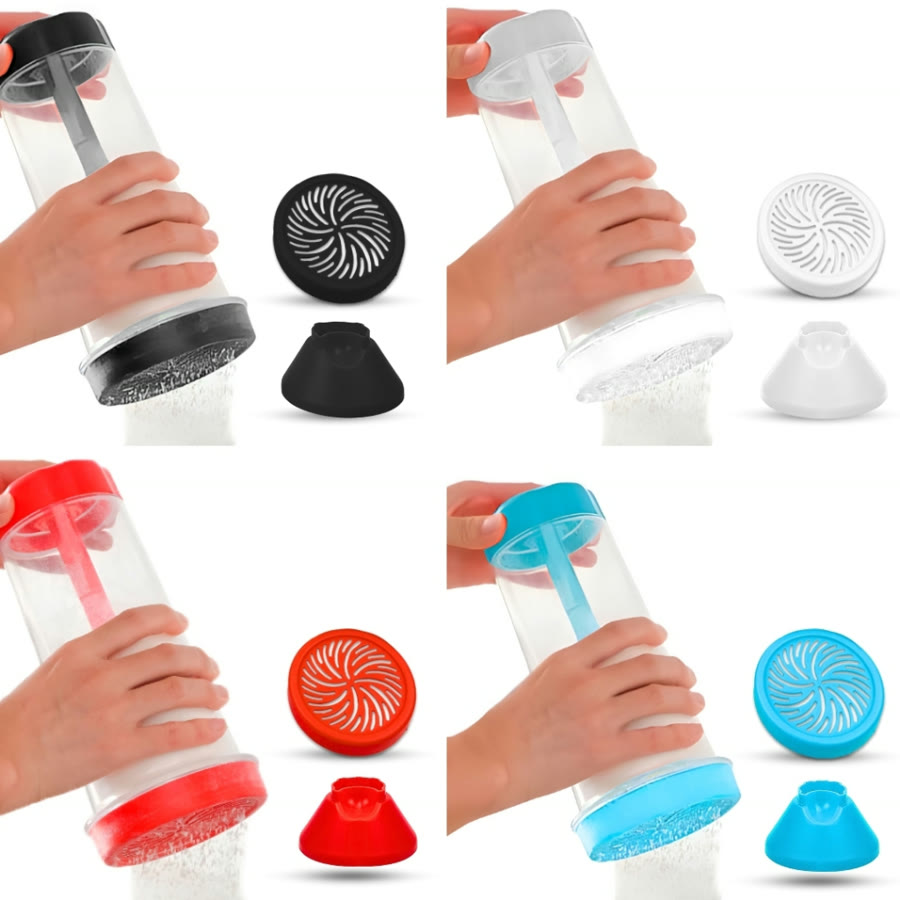

Achado nº 10
Tapioqueira 2 em 1: pote que guarda e peneira a goma







O que diz a página oficial do produto
- É um pote de plástico que guarda a goma de tapioca e tem peneira na tampa
- Segundo o anúncio, serve para armazenar, peneirar e aplicar a goma direto na frigideira
- Segundo o anúncio, cabe até 500 g de goma
- Mede 24,5 cm de altura e 10,5 cm de base; o diâmetro interno é de 8,5 cm
- Segundo o anúncio, é fácil de desmontar e de limpar
- Vem nas cores branca, preta, vermelha e azul
- Na Shopee, tem mais de 30 mil vendidos
Link de afiliado: se você comprar por ele, a Achadaria pode receber uma comissão, sem custo extra para você. Preço, estoque e entrega são da loja e podem mudar; confira lá antes de comprar.